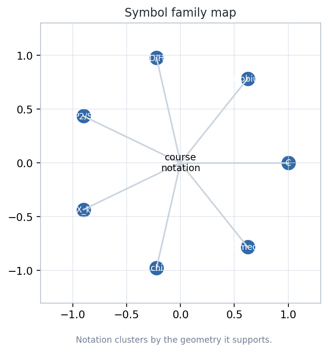
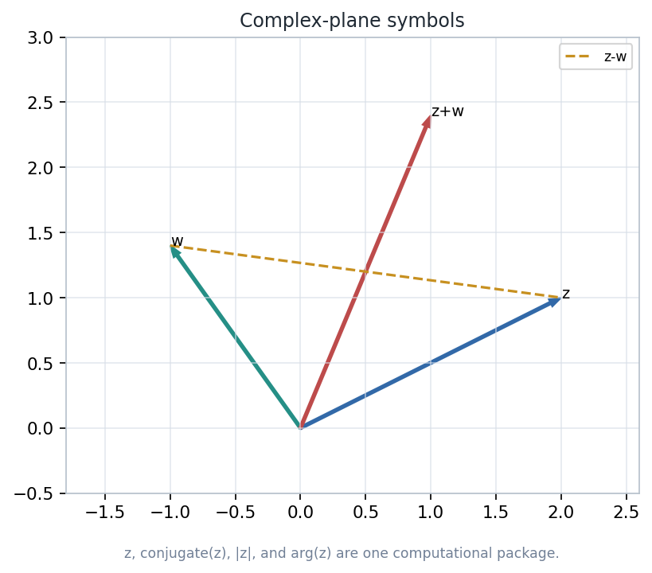
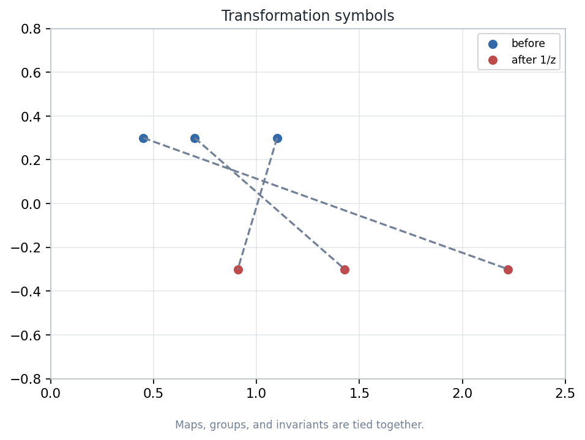
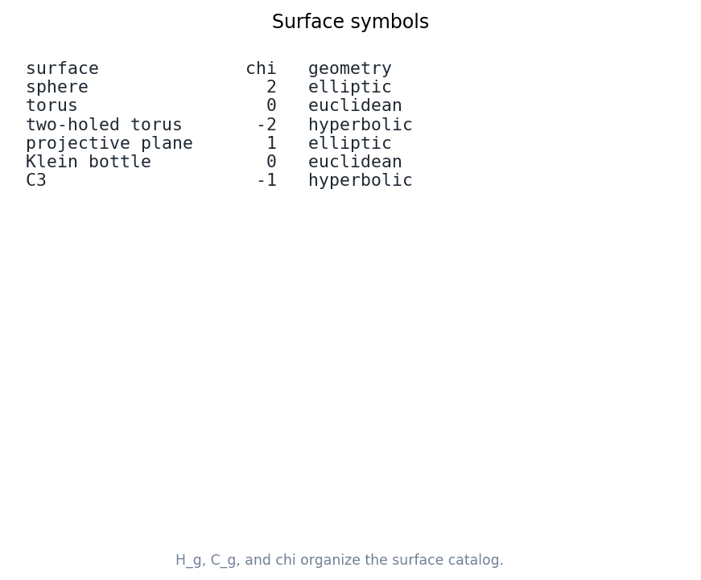
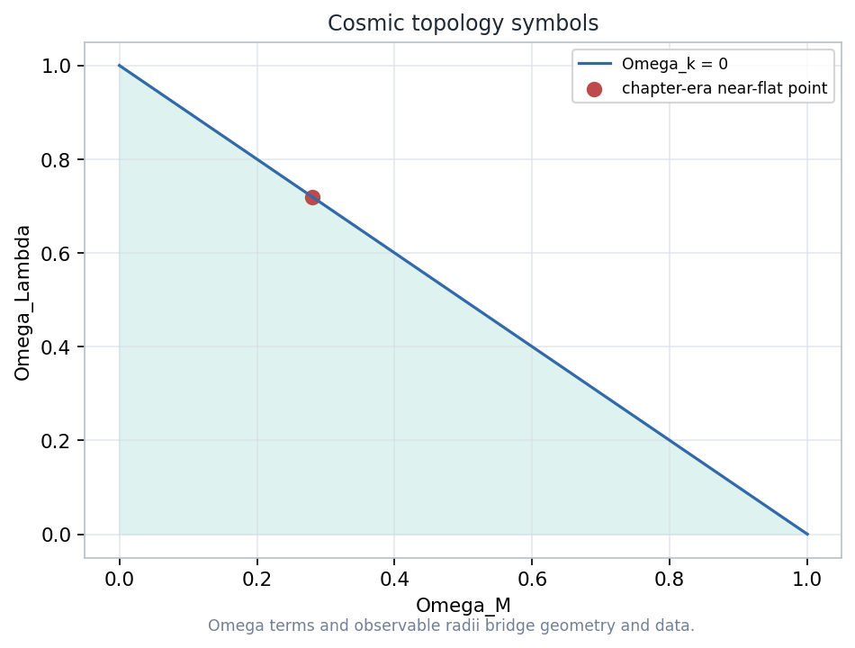
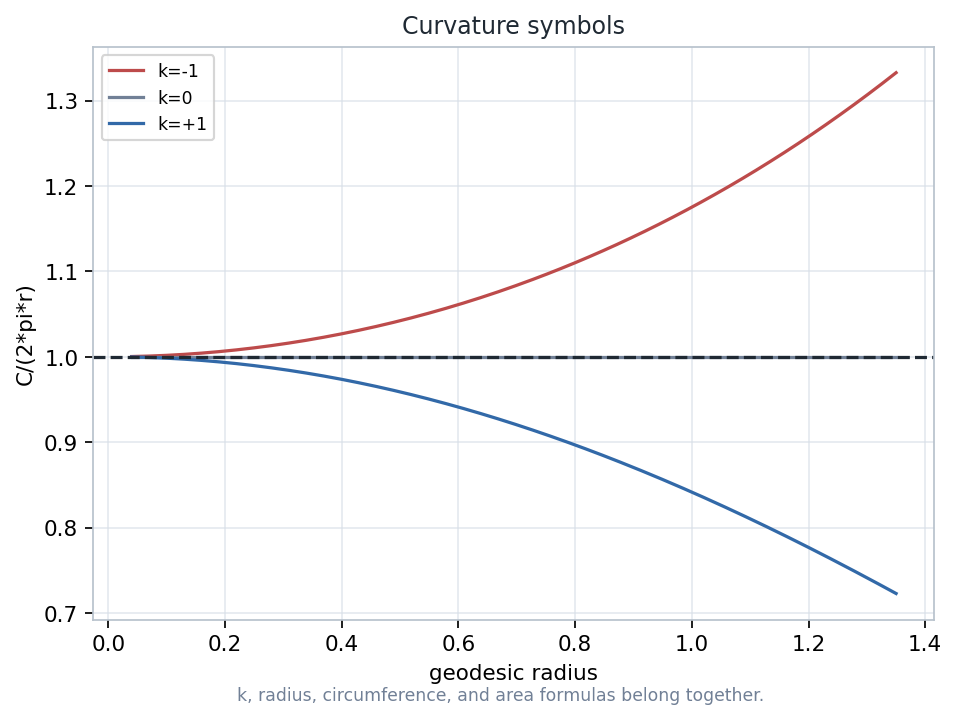

A compact computational glossary for the course: symbols are grouped by model, transformation, measurement, surface, and cosmic-topology role.

Examples include \(\mathbb{C}\), \(D\), \(\mathbb{P}^2\), \(H^3\), \(S^3\), and \(T^3\). The notation fixes coordinates, boundary conventions, and what counts as a visible point.
Pairs such as \((\mathbb{C},T)\), \((\mathbb{C},E)\), \((\mathbb{C}^+,M)\), \((D,H)\), and \((X_k,G_k)\) pair a space with its allowed symmetries.
Modulus, argument, angle, curvature \(k\), Euler characteristic \(\chi(S)\), and density terms \(\Omega_m,\Omega_\Lambda,\Omega_k\) are prompts for computation.
Read: identify the ambient model before interpreting a picture.
Compute: ask which invariant should survive the transformation.
Diagnose: separate coordinate appearance from intrinsic geometry.

\(\mathbb{C}\): complex plane
\(S^1=\{z: |z|=1\}\): unit circle
\(\overline{z}\), \(|z|\), \(\arg z\): reflection, length, direction
Inspection target: multiplication rotates and scales, conjugation reverses orientation, and the unit circle records pure direction.
Each ordered pair \((X,G)\) says: study the space \(X\) through the features unchanged by the group \(G\).
| Notation | Working meaning |
|---|---|
| \((\mathbb{C},T)\) | translations; vector differences matter |
| \((\mathbb{C},E)\) | Euclidean motions; distances and angles matter |
| \((\mathbb{C}^+,M)\) | Mobius maps on the extended plane; clines and cross-ratio structure matter |
| \((D,H)\) | hyperbolic motions of the disk; boundary-orthogonal geodesics matter |

The symbols \((X_k,G_k)\) package the three constant-curvature worlds into one notation. The sign of \(k\) tells which geometry is being modeled.
The diagram is a derived course map: it emphasizes how later model names reuse earlier coordinate machinery.
| Symbol | Instructor reading |
|---|---|
| \(X_1\#X_2\) | connected sum: combine surfaces by removing disks and gluing boundary circles. |
| \(T^2\) | torus: a quotient of a square by paired edge identifications. |
| \(H_g\) | handlebody surface of genus \(g\): orientable genus bookkeeping. |
| \(C_g\) | cross-cap surface of genus \(g\): nonorientable genus bookkeeping. |
| \(K^2\) | Klein bottle: a key nonorientable quotient example. |
| \(\chi(S)\) | Euler characteristic: a numerical invariant for separating surface types. |


\(H^3\): hyperbolic 3-space
\(S^3\): 3-sphere
\(T^3\): 3-torus
Local curvature evidence and global topology evidence answer different questions: shape can be hard to infer from a small observable region.
Pick one symbol family and build a two-line test: one construction, one invariant check, one sentence about what would fail if the notation were misread.
